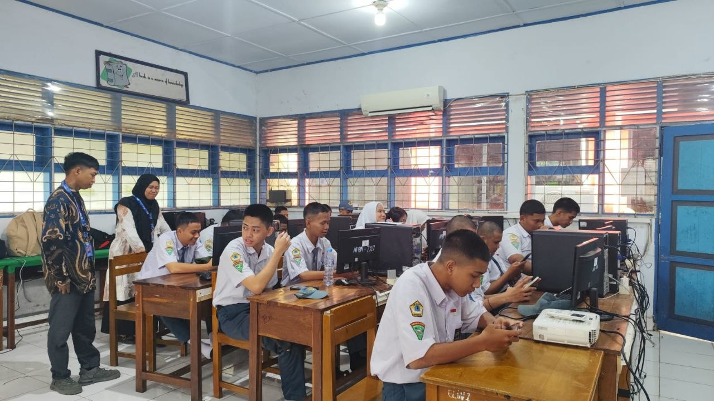

PORTFOLIO
Profil
Mengenal lebih dekat mahasiswa PPG
Biodata Mahasiswa
Asal Daerah
Kab. Bulukumba — Desa Ara
Saya berasal dari Kab. Bulukumba, tepatnya di Desa Ara. Sebagai seorang calon guru, saya belajar banyak tentang kecerdasan manusia justru dari para orang tua di sana.
Inspirasi Menjadi Guru

"Saya ingin menjadi guru yang mampu meyakinkan setiap anak didik saya bahwa sekeras apa pun latar belakang mereka, mereka tetap bisa menjadi mahakarya"
Terinspirasi dari para Punggawa di Desa Ara yang membangun perahu Pinisi tanpa gambar teknis — mengajar bukan memindahkan isi buku, tapi menanamkan insting dan karakter agar murid bisa membangun "perahu" kehidupan mereka sendiri.
Artefak Pembelajaran
Perjalanan pembelajaran PPL secara sistematis
Penilaian
Hasil evaluasi pembelajaran secara transparan
Lampiran 7 — Penyusunan Perangkat Pembelajaran
Lampiran 8 — Instrumen Penilaian Praktik Mengajar
Keterangan Nilai
Model Guru
Profil guru ideal yang ingin dicapai
Misi
- Menyelenggarakan pembelajaran yang inklusif
- Menciptakan pengalaman belajar bermakna
- Berpusat pada peserta didik
- Menggali potensi maksimal siswa
Kompetensi
Karakter Guru
Refleksi
Proses reflektif selama PPL
Materi yang Telah Dipelajari
- Dasar-dasar pedagogik: teori belajar, karakteristik peserta didik, strategi pembelajaran, pengelolaan kelas, evaluasi pembelajaran
- Penyusunan perangkat pembelajaran: modul ajar, CP dan TP, LKPD, media pembelajaran, instrumen penilaian
- Etika Profesi Guru: sikap profesional, administrasi sekolah, hubungan dengan siswa dan guru, disiplin dan tanggung jawab
Pengalaman Menantang
- Mengelola Kelas: teori pengelolaan kelas terkadang berbeda dengan kondisi nyata di sekolah
- Menyesuaikan Metode: menghadapi materi sulit, kemampuan siswa beragam, waktu pembelajaran terbatas
- Adaptasi Budaya Sekolah: cara komunikasi dengan guru, tata tertib sekolah, kedisiplinan dan etos kerja
Umpan Balik Guru Pamong
- Sudah menggunakan variasi metode agar siswa tidak bosan
- Sudah bagus dalam membangun interaksi/kedekatan dengan siswa
- Suara perlu lebih jelas dan tegas
- Penguasaan kelas sudah baik, tetapi siswa belakang masih kurang terlibat
Umpan Balik Dosen Pembimbing
- Mahasiswa sudah menunjukkan perkembangan dalam keterampilan mengajar
- Model pembelajaran sudah sesuai, tetapi sintaknya belum lengkap
- Refleksi pembelajaran perlu lebih mendalam
Filosofi
Nilai dan keyakinan pendidikan
Nilai Hidup
- Integritas
- Tanggung Jawab
- Empati
Filosofi Mengajar
Deskripsi Filosofi Mengajar
Keyakinan Pendidikan
Prinsip-prinsip Pendidikan
"Pendidikan bukan sekadar mentransfer pengetahuan, tetapi menumbuhkan karakter dan memerdekakan potensi peserta didik."
Galeri Dokumentasi
Dokumentasi kegiatan secara visual